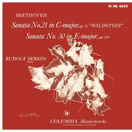
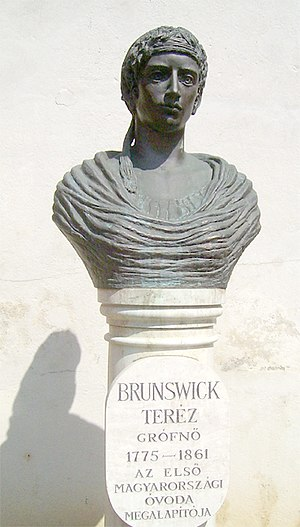

Backgrounds of Musics
Rondo a Capriccio
Symphony No. 9, "Ode to Joy"
Fur Elise
Symphony No. 5
Pathétique
Sonata No. 21 in C Major, "Waldstein"

Piano Concerto No. 5, "Emperor"
Violin Concerto in D major, Op. 61
Moonlight Sonata
Symphony No. 6 in F Major, Op. 68, "Pastoral"
Piano Concerto No. 3
Fantasia For Piano, Chorus, and Orchestra in C Minor, Op. 80
Triple Concerto
Appassionata
